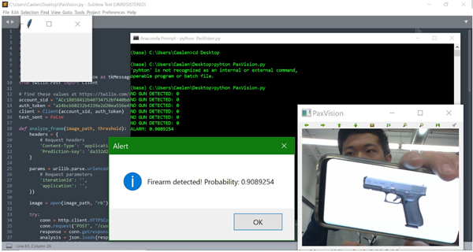
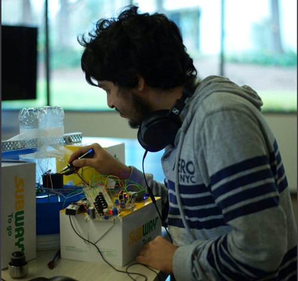

Opening ceremonies for the second annual Def Hacks Seattle kicked off at noon on Saturday, March 24th. Amit Mital delivered an inspiring keynote on his experience in the tech industry and the lessons he has learned in founding his own startup studio, Kernel Labs.
This year, we wanted to add a new dimension to our hackathons, inspiring not only technological innovation, but also a positive global impact. With this in mind, we announced our new Hack for Sustainability, Hack for Accessibility, and Hack for #NeverAgain challenges.
Over the next 24 hours, Def Hacks facilitated opportunities for attendees to meet with tech recruiters, provided mentors to advise hackers on their projects, and offered workshops by Microsoft, Name.com, and Acumatica. Many hackers stayed up all night to finish their projects, and by the next morning they were ready to present to the judges: Stacey Giard of Tola Capital, Frank Chen and Justin Wendlandt of Microsoft.
The Def Hacks Seattle team could not be happier with the outcome of this event; this 24-hour hack enabled attendees to learn skills ranging from basic JavaScript to Computer vision and create many innovative and impactful projects. We would like to extend a final “thank you” to our sponsors, Microsoft, Name.com, Acumatica, MLH, and Hackerearth! To see all hacks submitted, check out our Hackerearth page! Read on for more about our winners:
Best Hack by College Students:
Predictive Modeling for House of Representatives’ Voting: an ML algorithm that predicts whether or not congressional members will vote yes or no on a particular bill. For the scope of this hackathon, they limited the bills to three that we found to be important: H.R.34 - Safe Students Act, H.R.5248 - Sustainable Shark Fisheries and Trade Act, and H.R.5241 - Secure Act of 2018. With these predictions, users can contact the appropriate representatives about the issues they care about.
Best Hack by High School Students:
EzPen detects the movement of the mobile device and use it as an imaginary pen to take notes or draw diagrams for academic usage. This app detects the accelerometer of the mobile device and converts it into linear displacement, converts the data passed into Unity program, and generates the PNG file of the current notes or diagrams to the laptop.
Hack for #NeverAgain:
PaxVision is a reaction system founded under the idea of minimizing damage done through public shooting by detecting guns through Computer Vision. Utilizing Microsoft's Custom Vision API, PaxVision is an approach to a sensible alarm system developed against the recently rising problem regarding gun violence.
Hack for Sustainability:
The team that came to be known as “Those Hardware Guys in the Back” won our sustainability prize with their predictive water-heating system. Using Arduino microcontrollers, they created a prototype of a home-water-heating system that saves energy through predictive models of water usage.
Hack for Accessibility:
De(a)f hacks uses Hololens technology to allow those that are hard of hearing or deaf to "listen" into conversations. Using Microsoft Bing Speech API, the Hololens uses its mic to pick up audio and convert the audio bytes into text, which is then displayed as subtitles on the Hololens display screen. This allows users to read the conversations around them instead of hearing them.